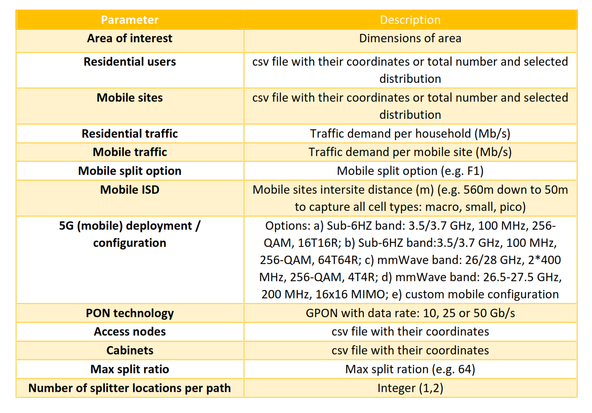

We have developed a fixed-access planning tool that gets as input geographic and Access network technology parameters (see the Table below) and returns an optimal aggregation scheme according to the preferred optical technology deployments (like TDM-PON, DSCM P2MP, WDM P2P).
The scope of the optimization is to accommodate traffic demands while minimizing the total fiber length needed for the deployment and the number optical systems (e.g. OLTs). The tool exploits clustering algorithms optimize deployment parameters e.g. to maximize the utilization of the deployed systems used etc.
The tool supports an arbitrary number of splitting stages and is equally applicable to both greenfield and brownfield deployments. In the former case, the tool freely selects the (optimal) location of splitters (and of any other element in general) anywhere in the area of interest, while in the latter case the position of splitters is set at the already deployed locations (e.g. street cabinets in specific positions in the area of interest).
The corresponding geospatial locations are imported as topological csv files or by means of a generator which generates known distributions based on the specific details of the area and the numbers of users. The tool is developed using python.
For more info contact us